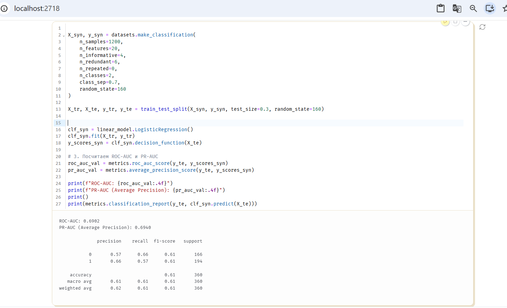
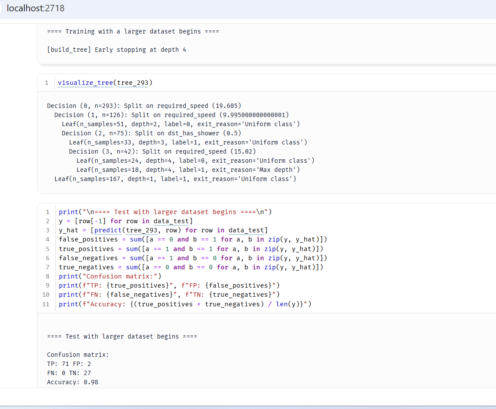
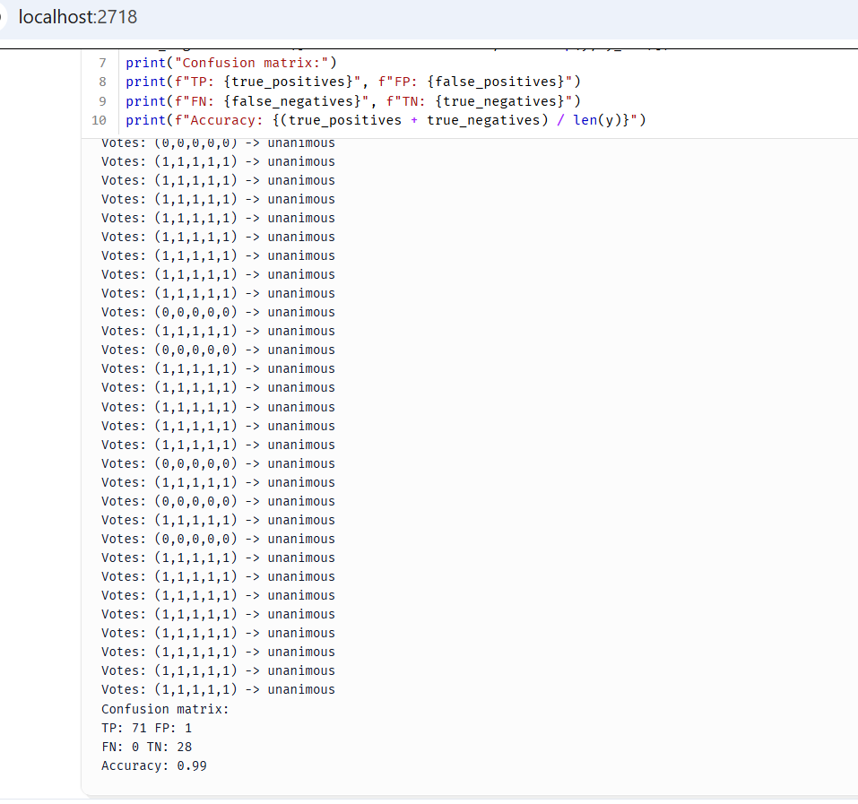
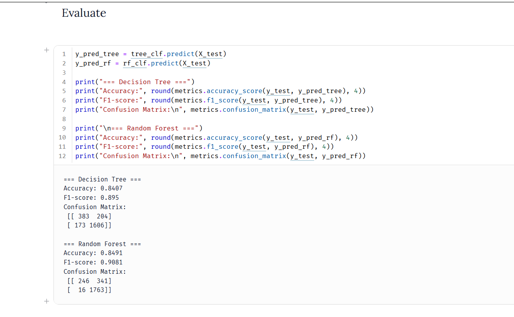
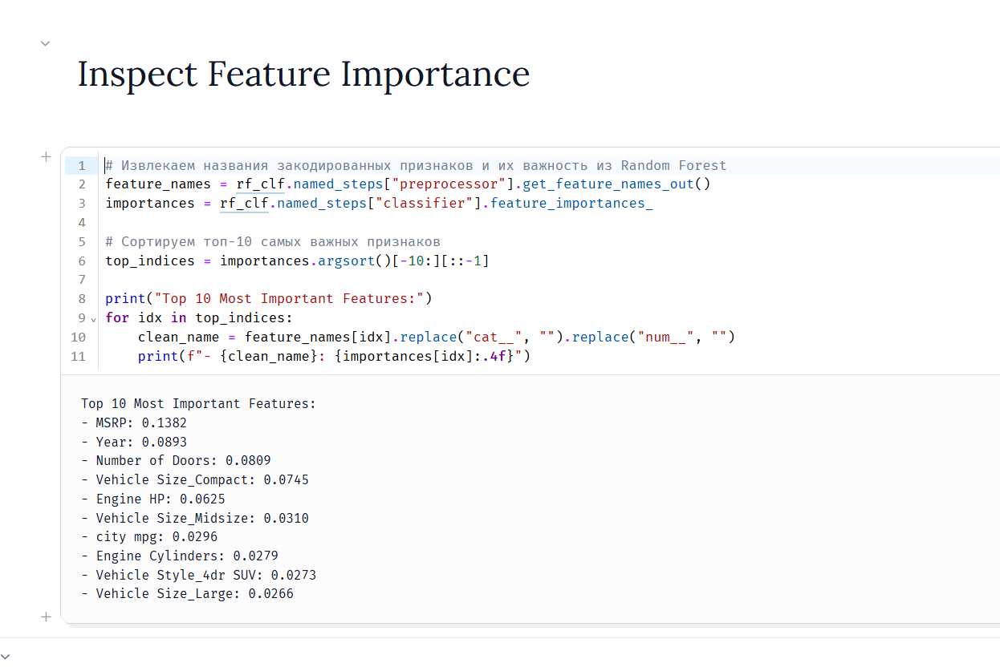

40: Puut, metsät ja luokittelun suorituskyky
Tällä viikolla aiheena oli luokittelumallien arviointi (metriikat) sekä päätöspuut ja satunnaismetsät.
1. Luokittelun suorituskyky ja metriikat
Ensimmäisessä tehtävässä tutkin, miten luokittelumallin toimintaa arvioidaan käytännössä. Pelkkä tarkkuus (accuracy) ei riitä, jos aineistossa luokat ovat epätasapainossa.
Tehtävässä kokeilin tuttuja mittareita: * Confusion matrix (Sekaannusmatriisi): näyttää oikeat ja väärät ennusteet taulukkona. * Recall (Saanti): kertoo, kuinka suuren osan oikeista tapauksista malli löysi. * Precision (Täsmällisyys): kertoo, kuinka moni mallin ennustamista positiivisista tapauksista oli oikeasti oikein. * ROC-AUC: näyttää, miten hyvin malli erottaa luokat toisistaan eri kynnysarvoilla.
Extra Challenge
MNIST-tehtävässä numeron 3 tunnistaminen oli mallille liian helppoa. Tulokset olivat melkein 100 %. Siksi tein tiedoston lopussa olevan lisätehtävän (Extra Challenge).
Tein koodilla vaikeamman synteettisen aineiston (make_classification), johon lisäsin kohinaa. Opetin siihen mallin ja tarkistin tulokset:

Tulokset haastavammalla aineistolla: * Accuracy: 0.61 (noin 61 % meni oikein) * ROC-AUC: 0.6902 * PR-AUC: 0.6940
Tulos osoittaa selvästi sen, että kohinan takia malli tekee enemmän virheitä eikä pysty ennustamaan kaikkea oikein.
2. Päätöspuu alusta alkaen (Decision Tree from Scratch)
Toisessa tehtävässä (320_puu_from_scratch.py) tein päätöspuun puhtaalla Pythonilla ilman valmiita kirjastoja.
Puu valitsee haarautumiset entropian ja informaatiokasvun (Information Gain) avulla. Malli ennustaa, kannattaako kulkea autolla vai pyörällä (go_by_car). Tärkeimmät piirteet olivat vaadittu nopeus (required_speed) sekä se, onko perillä suihkua (dst_has_shower).
Opetin mallia 293 rivillä dataa. Testasin sitä erillisellä 100 rivin testidatalla:

Tulokset: * Accuracy: 0.98 (noin 98 % ennusteista meni oikein). * Sekaannusmatriisi: TP: 71, FP: 2, FN: 0, TN: 27. Malli teki vain kaksi virhettä sadasta tapauksesta. * Tärkein tekijä oli nopeus. Jos vaadittu nopeus oli yli 19.6 km/h, puu valitsi aina auton.
3. Satunnaismetsä alusta alkaen (Random Forest from Scratch)
Kolmannessa tehtävässä (330_metsa_from_scratch.py) rakensin satunnaismetsän useammasta päätöspuusta.
Metsässä oli mukana 5 puuta (num_trees=5). Jokainen puu sai opetusta varten oman satunnaisen otoksen aineistosta. Lopullinen ennuste tehtiin äänestyksellä, jossa enemmistö voittaa.

Tulokset:
* Accuracy: 0.99 (noin 99 % meni oikein).
* Sekaannusmatriisi: TP: 71, FP: 1, FN: 0, TN: 28.
* Yksittäinen puu teki aiemmin kaksi virhettä. Viiden puun metsä teki enää vain yhden virheen sadasta testitapauksesta.
* Puut olivat useimmiten samaa mieltä (unanimous). Jos puilla tuli erimielisyyksiä (CONFLICTING), enemmistö äänesti silti oikein.
4. Sovellus: Automaattivaihteiden ennustaminen
Tässä tehtävässä (331_automatic_transmission.py) ennustin auton ominaisuuksien avulla, onko autossa automaatti- vai manuaalivaihteisto. Käytin mallina Scikit-learnin päätöspuuta ja satunnaismetsää.
Esikäsittely ja opetus
- Aineistossa oli yhteensä 11 827 riviä.
- Käsittelin puuttuvat numeeriset arvot mediaanilla. Kategoriset muuttujat enkoodasin One-Hot-menetelmällä (
Pipeline). - Jaoin datan ositetusti: 80 % meni opetusjoukkoon ja 20 % testijoukkoon.
Tulokset
| Malli | Tarkkuus (Accuracy) | F1-score |
|---|---|---|
| Päätöspuu (Decision Tree) | 0.8407 | 0.8950 |
| Satunnaismetsä (Random Forest) | 0.8491 | 0.9081 |

Satunnaismetsä toimi paremmin kuin yksittäinen puu. Se teki selvästi vähemmän virheitä automaattivaihteiden tunnistamisessa (FN: 16 vs. Puun 173).
Tärkeimmät piirteet (Feature Importance)

Ennusteen kannalta tärkeimmät piirteet olivat: 1. MSRP (hinta) – Kalliit autot ovat melkein aina automaatteja. 2. Year (vuosimalli) – Uudemmissa autoissa automaattivaihteisto on selvästi yleisempi. 3. Number of Doors ja Vehicle Size – Pienet autot ovat useammin manuaaleja. 4. Engine HP (teho) – Tehokkaammissa autoissa on useammin automaatti.